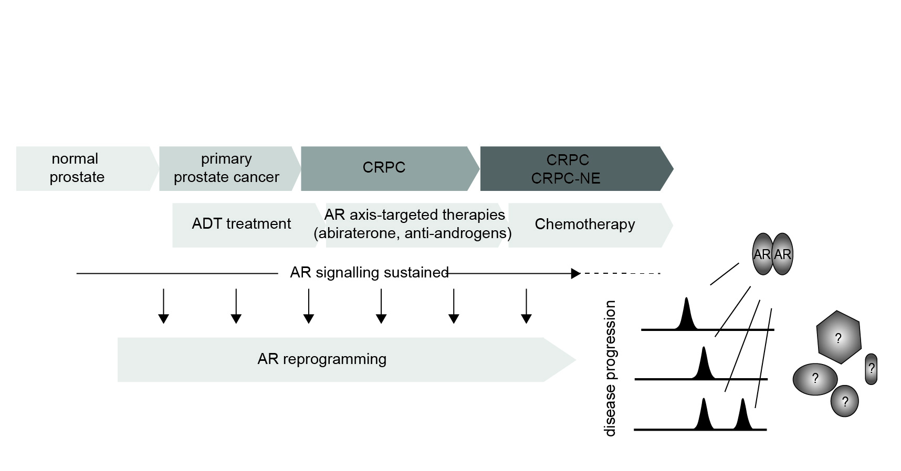

Androgen receptor signaling in Prostate Cancer
Our research focuses on understanding how androgen receptor (AR) protein complexes contribute to prostate cancer progression and therapy resistance. By dissecting the molecular composition and context-specific interactions of AR complexes, we aim to uncover new regulatory mechanisms and identify therapeutic vulnerabilities. We use proteomics, chromatin profiling, and computational approaches to study how these complexes shape cellular behavior in prostate cancer.